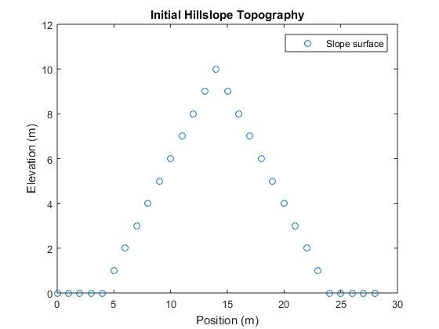
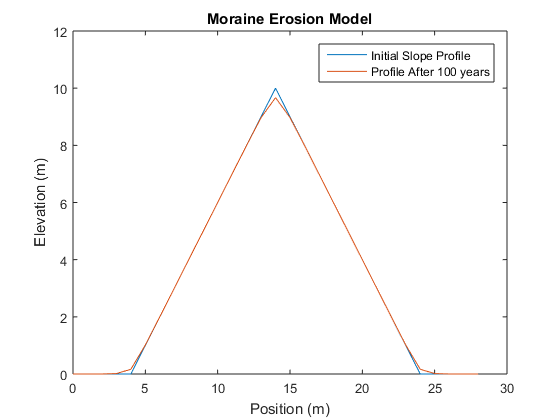

Contents
John Shuler
GEOS597 Homework #3: Hillslope evolution and plotting
Due: 9/19/2016
close all; clear all; clc;
Part 1: The finite difference approximation
Step 1: Taylor Series expansion
 ...
...
Step 2: The forward difference operator for first derivatives
a.) O(h) represents all terms of order h and higher. For the purposes of finite difference approximation here, these terms are dropped.
b.) 
Step 3: The centered difference operator for second derivatives

Step 4: Approximate the derivatives

Part 2: The finite difference solution to the diffusion equation
Step 1: Approximate the partial differential equation

Step 2: Solve for the value of the function at time t+k

Part 3: Implementing the numerical solution
Step 1: Define parameters and constants
kappa = 2*10^-3; % topographic diffusivity [m^2/year] dt = 1; % time step in [years] dx = 1; % space interval [m] % % % *Step 2: Make the initial model* % z = [0 0 0 0 0 1 2 3 4 5 6 7 8 9 10 9 8 7 6 5 4 3 2 1 0 0 0 0 0]; % [m] nNode = numel( z ); % [No] number of elements in the x-direction xArray = ( 0 : nNode - 1 ) .* dx; % [m] make the x-position vector % % *At x = 14 m, z = 10 m, the maximum elevation.* % figure (1); plot (xArray,z,'o'); title ('Initial Hillslope Topography') xlabel ('Position (m)') ylabel ('Elevation (m)') legend ('Slope surface') axis ([0 30 0 12]) set(gcf,'PaperUnits','inches','PaperPosition',[0 0 6 6]) print -dpng InitialCondition -r100 grid on % % *Step 3: Loop through time to compute the topography at* _t+dt_ % tMax = 100; % max time steps [years] t0 = dt; zNew = zeros (nNode,tMax); zNew(:,1) = z; for it=t0+dt:dt:tMax; for ix=2:nNode-1; zNew(ix,it)=dt*kappa* ((zNew(ix+1,it-1) - 2*(zNew(ix,it-1)) + zNew(ix-1,it-1))/(dx^2)) + zNew(ix,it-1); end end % % *Step 4: Plot results* % figure (2); plot (xArray,z) hold on; plot (xArray,zNew(:,tMax)) legend ('Initial Slope Profile','Profile After 100 years') title ('Moraine Erosion Model') xlabel ('Position (m)') ylabel ('Elevation (m)') axis ([0 30 0 12]) grid on % 
Part 4: Discussion
Increasing tMax from 100 years to 1 million years significantly increases the rounding of the top of the moraine. More material is removed and deposited at the foot if the duration of exposure is increased, all other variables being constant. This is consistent with our current understanding of moraine erosion and deposition (Putkonen et al, 2008). In this example, our final moraine height varied from ~9.5 m after 100 years to < 0.5 m after 100,000 years.
Values of  most often vary within one order of magnitude of the initial value used here, according to our lecture notes. Decreasing by an order of magnitude results in decreased sediment movement. Increasing by an order of magnitude has the opposite effect, illustrating the necessity of accurate estimates of to increase model performance. In this example, for tMax = 1000, the final height of the moraine varied by ~ 5 meters from
most often vary within one order of magnitude of the initial value used here, according to our lecture notes. Decreasing by an order of magnitude results in decreased sediment movement. Increasing by an order of magnitude has the opposite effect, illustrating the necessity of accurate estimates of to increase model performance. In this example, for tMax = 1000, the final height of the moraine varied by ~ 5 meters from  to
to  .
.